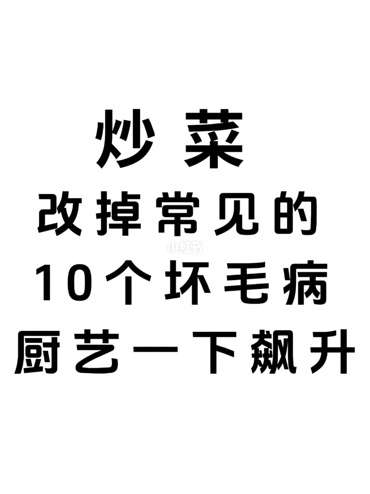
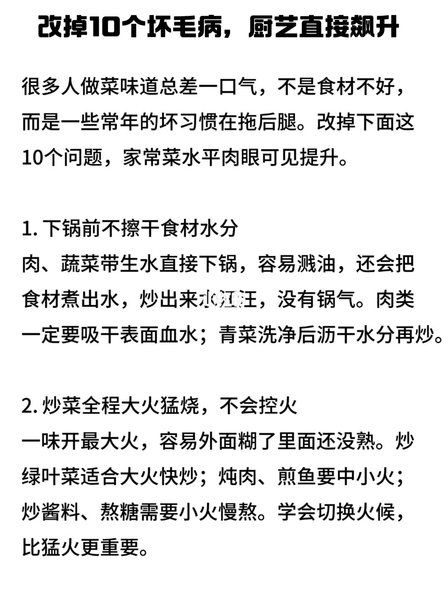
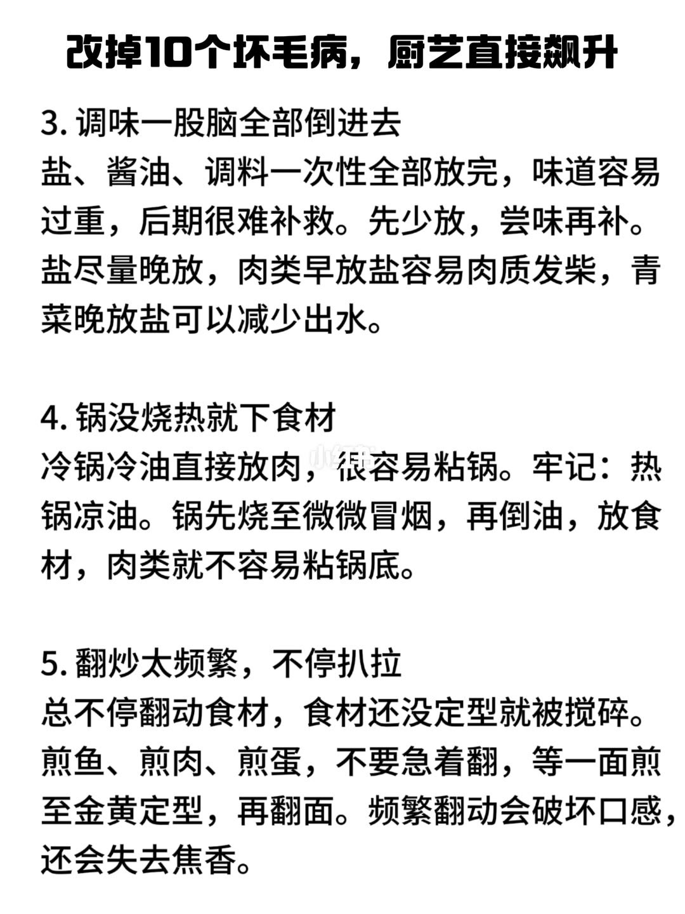
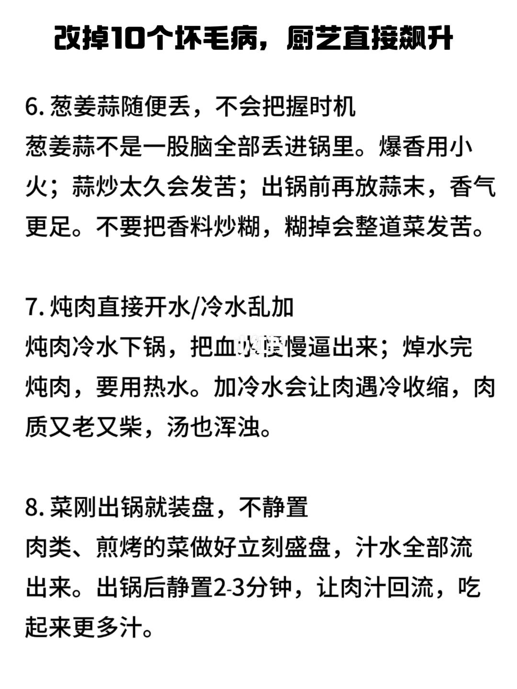
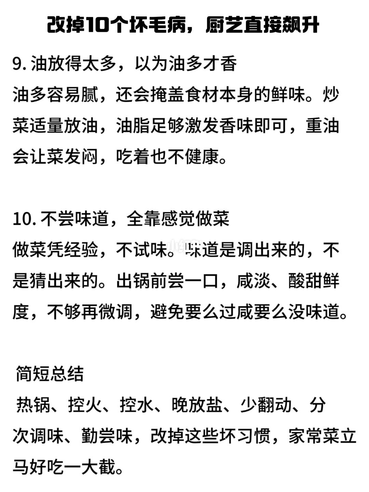

图文实录 · 小红书 · 鱼鱼吃美食
改掉炒菜常见的 10 个坏毛病，做菜一下好吃了
十个毛病收成水、火、盐、锅、翻动、香料、加水、静置、油和尝味。最后一页把能立刻改的收成七个动作。
1/5
封面
白底黑字：炒菜，改掉常见的 10 个坏毛病，厨艺一下飙升。没有具体做法。

2/5
先擦干，再学会换火
开篇写：不好吃常常不是食材差，是习惯。1、下锅前不擦干。带生水下去会溅油，也会把菜煮出水，没有锅气。肉要吸干表面血水，青菜洗完控干再炒。2、全程大火。外焦里生。叶菜适合大火快炒；炖肉、煎鱼用中小火；炒酱、化糖用小火慢熬。会换火比一直大火重要。

3/5
分次调味，热锅冷油，少翻
3、调味一次倒完容易过重，事后难改。先少放，尝过再加，盐尽量晚放。肉太早放盐会老、会柴；青菜晚放盐，出水少一些。4、锅没热就下。冷锅冷油容易粘。口诀是热锅冷油：锅烧到微微冒烟，再下油和下食材。5、翻得太勤会把还没定型的鱼、肉、蛋弄散。一面煎到金黄、定住再翻，才留得住焦香。

4/5
香料、加水、出锅静置
6、葱姜蒜不要一次丢完。爆香用小火；蒜炒太久会苦；出锅前再放蒜末，香气更足。炒糊了整道菜发苦。7、炖肉加水要分场合：冷水下锅，把血水慢慢逼出来；焯完再炖要用热水。热肉里加冷水，肉收缩、又老又柴，汤也浑。8、肉和煎烤的菜刚出锅就装盘，汁会流走。静置 2–3 分钟，让肉汁回去。

5/5
少油，出锅前尝一口
9、油多会腻，也会盖住食材本身的鲜。够激发香味就行，重油让菜发闷。10、不尝、全靠感觉。出锅前尝咸淡、酸甜和鲜，不够再微调。总结：热锅、控火、控水、晚放盐、少翻动、分次调味、勤尝味。

汇总
七个动作盖住十条
十条分在第 2 到第 5 页。能马上做的是第 5 页那句：热锅、控火、控水、晚放盐、少翻、分次调味、尝味。另外三条不在这句里：葱姜蒜分时机、炖肉冷热水分开、肉出锅静置 2–3 分钟。没有克数和油温。蒜「小火爆香」和「出锅前再放蒜末」写在同一条里，是两种时机，不是互相否定。